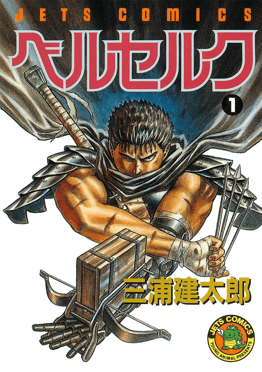

Berserk (>ベルセルク) is a dark fantasy Japanese manga series written by the late Kentaro Miura. Set in medieval Europe, the series follows Guts—a lone swordsman—as he seeks revenge on Griffith, who was once his commander and closest friend but betrayed him and gave him the Brand of Sacrifice: a bleeding brand that causes excruciating pain whenever supernatural creatures draw near and symbolizes those who are marked and offered up as sacrifices to the God Hand (high-ranking, powerful, reality-warping demon sovereigns).
From the costs of ambitious dreams and sacrifices that follow; to defying fate against free will; acts of reclaiming humanity while religions demand and take control; healing unhealed wounds while constantly coping with torturous nightmares; Berserk explores extremely dark, deep concepts of humanity, philosophy, and psychology, showcased in every beautifully drawn, detailed, yet unhesitating panel. As you venture further into the series, you slowly realize your perception of everything starts falling apart as you explore Guts' backstory, empathize with him, and understand his perspectives; you will also soon betray and turn on your favourite characters whom you once loved, as your conscience, morality, and values change and warp into something you never knew.
